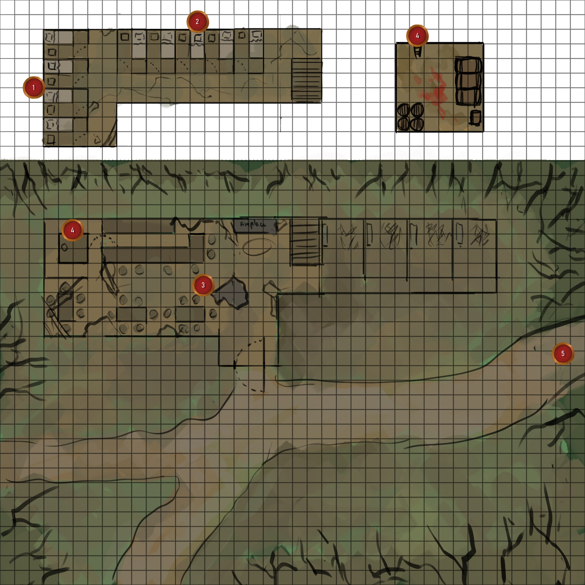
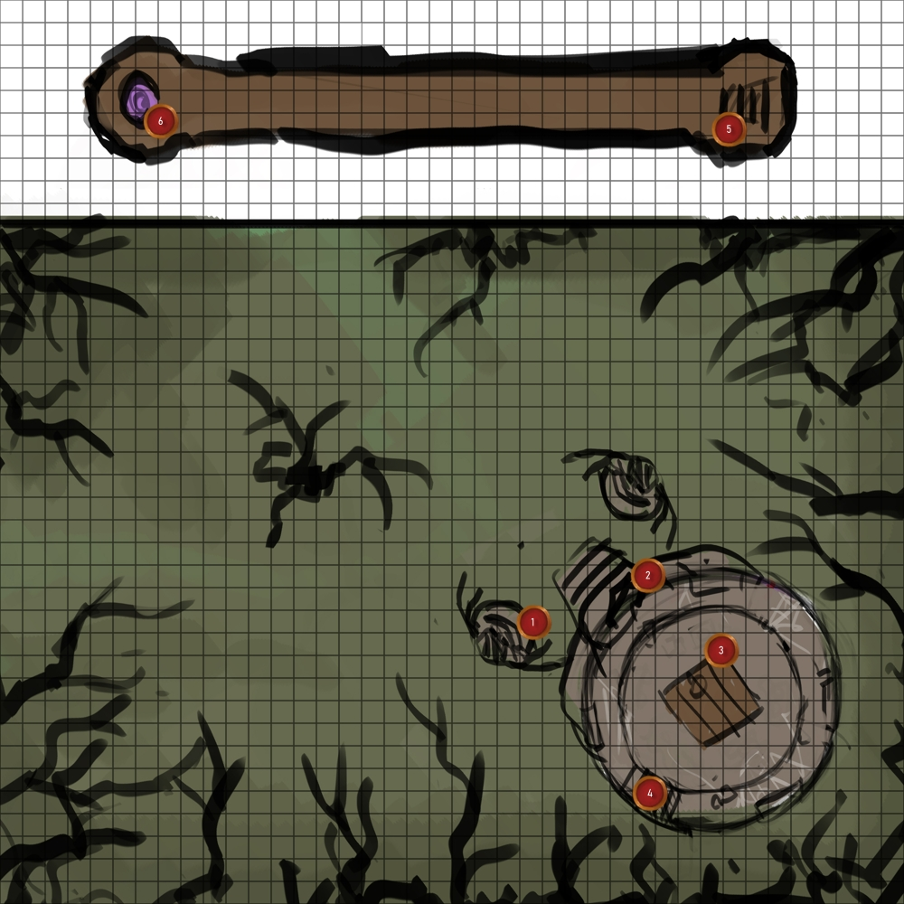

THE SUNRISE INN - GAME MASTER

MAPS
OVERWORLD : EDLAN WOODS

MAPS
MAP : SUNRISE INN (PRISTINE)

MAP : SUNRISE INN (DECAYED)
MAP : ATTENBUR

MAP : BAND-EAR'S CAMP

MAP : CLIFFSIDE

MAP : DARK HOVEL
MAP : DARKSTONE CAVE (EXTERIOR)

MAP : DARKSTONE CAVE (INTERIOR)
MAP : FOREST PATH 1

MAP : FOREST PATH 2

MAP : FOREST ROAD 1

MAP : FOREST ROAD 2
MAP : FORT DAVLIN

MAP : GATEWAY PASS

MAP : LIONSTONE BRIDGE

MAP : MIRROWMERE LAKE

MAP : MIRROWMERE ISLE

MAP : ANCIENT RUINS

MAP : TOWER OF KALDER (EXTERIOR)
MAP : TOWER OF KALDER (INTERIOR)